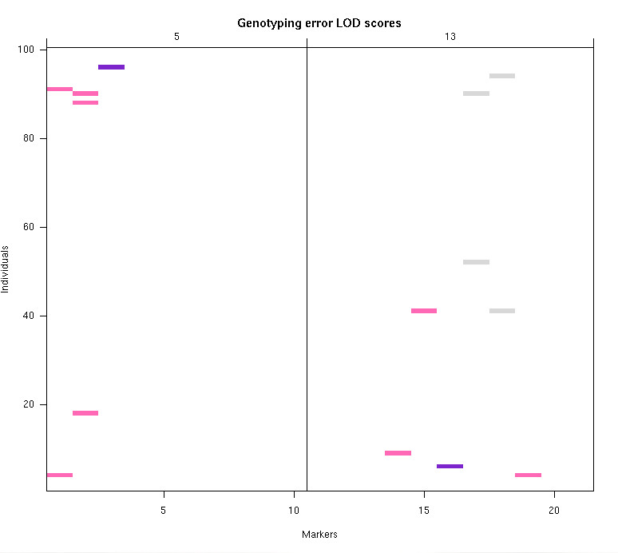

[ Home | Download | FAQ | News | Bugs | Sample data | Tutorials | Book | Manual | Citation ]
Genotyping error LOD scores. Colored pixels represent larger values of the error LOD scores described by Lincoln and Lander (1992) and which indicate likely genotyping errors. The genotypes corresponding to purple pixels are likely to be in error.

[ Home | Download | FAQ | News | Bugs | Sample data | Tutorials | Book | Manual | Citation ]